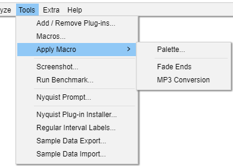

Tools Menu: Apply Macro
From Audacity Development Manual
Tools Menu provides miscellaneous commands that:
- Act on the project.
- Don't fit into the categories Effects, Generators or Analyzers.
- 
Palette...
Clicking on this will show the Macro Palette, a dialog with a list of all your Macros.
You can select any of the listed Macros and apply them either to the current project or to audio files.
The list of names may vary from what is shown here, depending on what macros you have defined.

<Macro Name>
If you have created your own custom Macros these Macros and those pre-shipped with Audacity will be listed in the dropdown menu.
Selecting any of these Macros by clicking on it will cause that Macro to be applied to the current project.